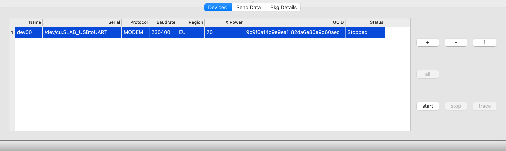

Z-Wave.Me Zniffer and Advanced Radio Toolkit (A.R.T.)
Advanced Radio Toolkit (A.R.T.) - this is a software and hardware complex designed to listen to the radio broadcast of the wireless Z-Wave protocol, compose and send any packets.
Monitoring radio commands allows you to identify problems in the Z-Wave network, such as incorrect routes, associations with non-existent devices, incorrect packet, and much more.
Composing and sending packages will be useful for advanced installers and developers of Z-Wave devices to check regular and abnormal situations.
Z-Uno or RaZberry with a Z-Wave chip of the 7th generation and higher is used as equipment for listening and sending radio commands. The A.R.T. can work simultaneously with several equipment, in this case, you can observe the signal strength of one device from different locations at the same time.
In order for the equipment to be supported by the software, it is necessary to purchase a license.
Main window

Devices
Сonnect the equipment to the computer, press "+" to add it to the devices list and select the serial port, if selected correctly, the equipment UUID will be displayed.

- Name - The name of the equipment (Z-Uno, RaZberry) that listens to the radio broadcast, is displayed in the Trace window, can be edited.
- Serial - Device port. Local ports and remote ports with a web serial address are supported.
- Protocol - Protocol for equipment interaction with the A.R.T application (Modem - special mode with the ability to monitor and send packets, PTI - Z-Uno/RaZberry continues to work in normal mode and report all incoming packets).
- Baudrate - Serial port speed. For PTI, it is selected manually (for RaZberry 7 always 230400, for Z-Uno 2 by default 230400 and should match the speed in zunoPTIConfigUART function). For Modem, it is detected automatically.
- Region - The radio frequency on which the equipment listens to the radio broadcast. For PTI the current frequency of the equipment is used.
- TX Power - The radiation power of the modem is 0.1 dBm. Not available for PTI mode. For Modem it is possible to set a value from 0 to 200, i.e. from 0 to 20 dBm.
- UUID - The UUID of the equipment USB adapter, read-only.
- Status - Shows the status of the equipment, idle or the process of listening to the radio is active.
- Buttons:
"+" - Add new equipment
"-" - Delete the selected equipment
"i" - Information about the selected equipment (should not be active)
"all" - Select all equipments
"start" - Start listening to the radio
"stop" - Stop listening to the radio
"trace" - Open a window for viewing the traffic of the radio broadcast for the selected equipment
About equipment
This window contains full information about the capabilities of the equipment and other functions.

- Type of equipment
- Is the license activated for the equipment to work with the software
- Purchase a license
- Check the operation of the radio in the equipment
- Select the radio frequency (region) and adjust the transmitter power
- For Z-Uno, it is possible to get a QR code to include via SmartStart/S2
Send Data
You can send a packet only if the equipment is running on the Modem protocol.

- Device - The equipment from which the package will be sent
- Channel - Data sending channel
- Contents - A table that allows you to generate a package for sending
- RAW - Package to be sent in the HEX format
PkgDetails
As an example, the screenshot shows a package from an socket plug with a measurement of energy consumption.

- The table shows detailed information about the selected Z-Wave package from the Trace window.
- The user can select the version of the command class. By default, the oldest available version is used.
- If one byte contains several properties, then each is written from a new line.
- For some packages, additional data may be displayed, for example, a decoding of the meter value.
Tracing Window Area
The trace window in real time shows all Z-Wave radio commands at a given frequency.

To create a new Trace window, select the equipment on the Devices tab and click the trace button. If the trace button is not active, then first you need to press the start button.
You can work with several equipment at the same time and open a Trace window for each. Also you can open several windows for one equipment.
If you press the right mouse button in the Trace window anywhere, a menu will appear.

- Auto scroll enable/disable
- Clear the window
- Export selected strings in the format JSON/CSV
- Filter
- New - Create the new project
- Open - Open the saved project
- Save/Save As - The project is saved in JSON format and contains a list of equipments with port, trace windows, statistics, including S0/S2 encryption keys, HomeID, etc.